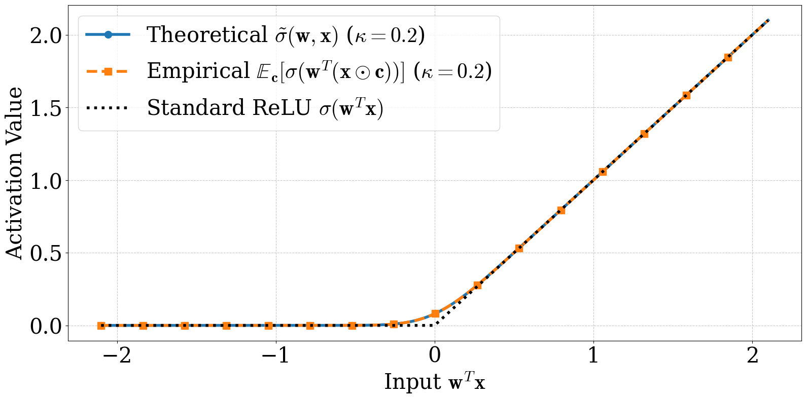
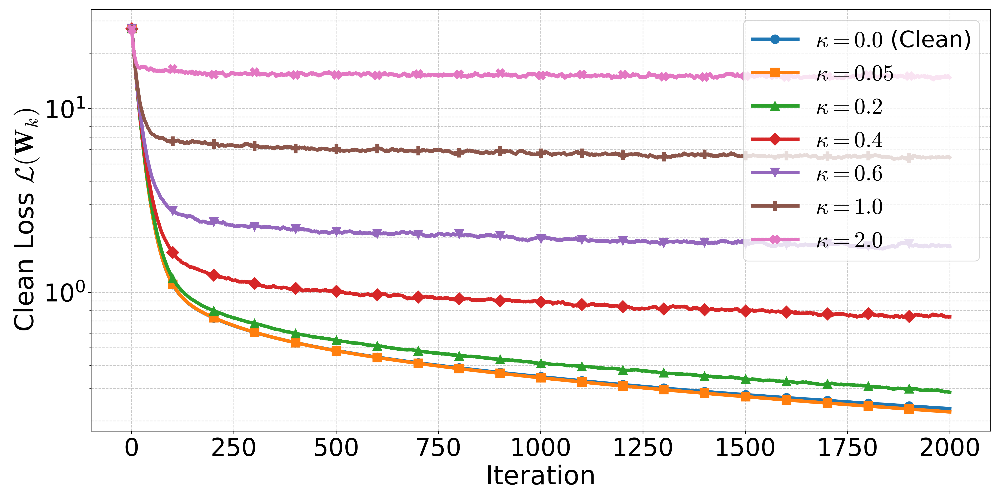

Standard convergence analyses for neural network training assume the data behaves. The inputs are clean, the gradients are unbiased, the loss is smooth enough. When the literature does engage with noisy training data, the noise is almost always additive — a small Gaussian shift dropped on top of every input. We look at the structurally harder version: noise that multiplies every input instead, and ReLU networks instead of smooth ones. The math, surprisingly, still goes through.
§1 · The setup
What if every input pixel is randomly stretched?
Pick a two-layer ReLU network — the simplest non-trivial neural net you can write down. Its input is a vector $\mathbf{x}$. Now do something almost trivial to that input before the network sees it: multiply each coordinate by an independent Gaussian random number, centered at $1$, with a small standard deviation $\kappa$.
Each entry $c_i$ is on average $1$ but jitters around it. The bigger $\kappa$, the larger the jitter. This is multiplicative noise — and unlike additive noise, it does not just shift the input, it scales it. Every batch sees a slightly different version of every example.
The general question — what does training with noise actually do to the loss landscape? — has a long history. In 1995, Chris Bishop showed that, for a smooth network, training on inputs corrupted by additive Gaussian noise is approximately equivalent to training without noise but with a Tikhonov-style penalty on the network's behaviour. Noise is implicit regularization. We are asking the same kind of question, but for multiplicative noise rather than additive, and for ReLU networks — which are not smooth, and so are exactly the case Bishop's Taylor-expansion argument cannot reach.
§2 · The smoothed activation
A new ReLU appears, on its own, out of the math
Here is the technical move that makes the rest of the analysis possible. We need to compute the expected behaviour of a ReLU when its argument is a Gaussian random variable. That expectation has a closed form. It is not ReLU. It is something smoother:
$\Phi$ is the Gaussian CDF, $\varphi$ its density. Set $\kappa = 0$ and the right-hand side collapses back to ReLU. Crank $\kappa$ up and the kink at the origin softens. We call this the smoothed ReLU: an activation function the math produces from the noise model, not one we stipulated.
A statistician will recognize this expression. It is the mean of a rectified Gaussian — the closed form that has lived in the Tobit model of censored regression since Tobin (1958), and is built from the same components as the inverse Mills ratio $\varphi/\Phi$ from selection-bias econometrics. What is new here is not the formula but its role: it turns out to be exactly the keystone you need to ask "what does the loss look like, in expectation, when a ReLU network is trained on randomly perturbed inputs?" — and once you have that keystone, a convergence proof falls out behind it.
For the convergence analysis we actually work with a slightly simpler proxy, $\hat\sigma(\mathbf{w},\mathbf{x}) = z\,\Phi(z/\sigma)$, which drops the $\sigma\,\varphi(z/\sigma)$ term. The two agree everywhere except in a small neighbourhood of $z = 0$, and the gap shrinks at rate $O(\sigma\,\varphi(z/\sigma))$ — small enough that the downstream theorems are not affected.

The trick is to notice that $\mathbf{w}^\top(\mathbf{x} \odot \mathbf{c}) = \mathbf{c}^\top(\mathbf{w} \odot \mathbf{x})$ — a Gaussian random variable with mean $z = \mathbf{w}^\top\mathbf{x}$ and standard deviation $\sigma = \kappa\|\mathbf{w}\odot\mathbf{x}\|_2$. The expected ReLU of a Gaussian is a textbook integral. Plugging it in turns the non-smooth, randomness-inside-the-nonlinearity object into a smooth, deterministic function of $z$ and $\sigma$. The expected-loss decomposition (and with it, the regularizer identification) leans on this single resolution.
The activation function we end up analyzing is not the one we put in.
§3 · Training dynamics
The loss converges. Where it converges depends on the noise.
Plug the smoothed ReLU back into the loss and the expected loss decomposes into two clean pieces: an MSE on a smoothed network, plus a data-dependent regularizer that scales as $\kappa^2$. This is the explicit, ReLU-specific instance of the noise-is-regularization picture Bishop sketched in 1995 — except that here, because we have the closed form for the rectified-Gaussian mean, we get the regularizer exactly, without any small-noise approximation. It is also the kind of decomposition that lets you write down a convergence proof.
What comes out is the following picture. With enough hidden neurons (the standard NTK overparameterization), small enough learning rate, and small enough $\kappa$, gradient descent on the noisy objective converges linearly — but not to zero. It converges to a ball around the global minimum whose radius shrinks as $\kappa$ shrinks. Send the noise to zero, get clean GD back. Crank the noise up, the ball gets bigger.

Linear convergence to a noise-controlled error ball is a strong promise. It says you are not navigating a chaotic surface — you are descending toward a target whose location you can write down in terms of the network width, the number of samples, and the noise level. You will not reach the global optimum, but you will not wander either.
§4 · Why this is interesting beyond the obvious
The deeper contribution is about biased gradients
The headline result is about Gaussian masking, but the engine underneath is more general. To make the convergence proof work, we needed a generic theorem for SGD with a biased gradient estimator under a relaxed smoothness condition. That theorem (the paper labels it Theorem 5.1, in §5) does not care that the bias comes from a Gaussian mask — it only cares about the bounds. Drop in a different mask, a different smoothing, a different family of input perturbations, and the theorem still applies.
This sits in a small but active line of work on biased SGD — the self-bounded-gradient property of Srebro, Sridharan, and Tewari (2010), the strong-growth and expected-smoothness conditions of Vaswani–Bach–Schmidt (2019) and Gower et al. (2019), the unifying "Biased ABC" framework of Demidovich et al. (2023). Our theorem is one more entry in that lineage, specialized to the regime where the network is overparameterized enough that training stays close to its initialization (the so-called Neural Tangent Kernel regime).
This is the part of the paper we expect to outlive the specific application. Most NTK analyses assume unbiased gradients because that is the easy case. Many real settings — quantization, structured masking, noisy embeddings, channel-coded features — give you a biased estimator instead, and biased estimators are where most off-the-shelf theory breaks. Now there is a tool that does not.
§5 · The verdict
What we proved, and what we did not
Proven
- Closed-form expected loss decomposes into smoothed MSE + adaptive regularizer (Theorem 4.1).
- General SGD framework for biased gradient estimators with relaxed smoothness (Theorem 5.1).
- Linear convergence to a $\kappa$-controlled error ball under sufficient overparameterization (Theorem 5.5).
- Closed-form for a smoothed ReLU activation that emerges naturally from the analysis.
Open
- Deep networks. The proof is two layers; whether the picture survives depth is unknown.
- Large $\kappa$. The bound is meaningful for small noise; the high-noise regime is not yet covered.
- Correlated masks. Independence across iterations is load-bearing; on-device single-mask training is not yet covered.
- Formal differential privacy. Empirical privacy curves are not the same thing as $(\varepsilon,\delta)$-DP.
The honest framing: this paper is a fundamental result on a clean mathematical object. The applications it touches — privacy, federated learning over wireless channels, dropout-as-regularization — all deserve a fuller treatment that we did not finish here. We did not want to oversell those connections. The pieces that we believe will compound are the smoothed-activation derivation and the biased-SGD framework underneath.